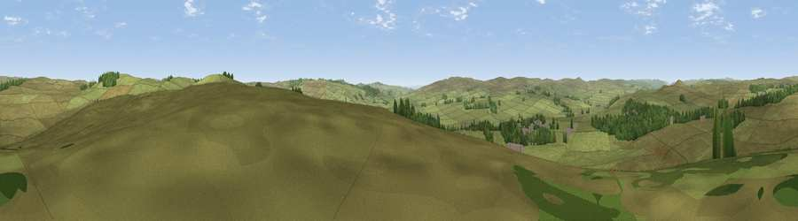

Viewpoint near Otterburn
#31598 in England · top 74% of its area beats it · near OtterburnWhere it is
The exact computed spot (NY 89475 94025). Click the marker for map links.
The view, rendered

A 360° render of this exact spot computed from the terrain model, tree cover and land cover — summer colours, afternoon light, calibrated against photographs of famous viewpoints. Real trees, hedges and buildings will differ in detail.
The panorama
Grey silhouette: terrain skyline in each direction (720 bearings, Earth curvature and refraction included). Dashed green: skyline with trees (+15 m) and buildings (+8 m) as obstacles. Blue strip: how far the ground is visible on each bearing.
Where the view opens
Wedge length = distance to the farthest visible ground on that bearing (vegetation-aware). Rings at 10, 25 and 50 km.
What fills the view
91% grassland · 8% woodland · 1% built-up
Angular shares of the visible panorama (visual magnitude), not map area. Landscape diversity 0.15 (0–1 Shannon).
Key numbers
More beautiful places nearby
The staircase of upgrades: each row has a higher view potential than everything closer. Driving times are estimates from straight-line distance, calibrated against real road routing — check an actual route before setting out.
| Place | Direction | Drive | Score |
|---|---|---|---|
| Viewpoint near Otterburn | NE · 2 km | ~5 min | 55.1 |
| Viewpoint near Otterburn | NW · 3 km | ~7 min | 55.8 |
| Viewpoint near Elsdon | SE · 5 km | ~10 min | 65.3 |
| Viewpoint c11996_7785 | N · 6 km | ~13 min | 65.5 |
| Viewpoint near West Woodburn | SSW · 6 km | ~14 min | 70.4 |
| Hart Side | SSE · 7 km | ~14 min | 71.0 |
| Viewpoint near Elsdon | ENE · 7 km | ~15 min | 71.9 |
| Padon Hill | W · 8 km | ~15 min | 72.6 |
55.24031, -2.16706 · source: screening · position refined by local search. Computed location — check access rights before visiting.